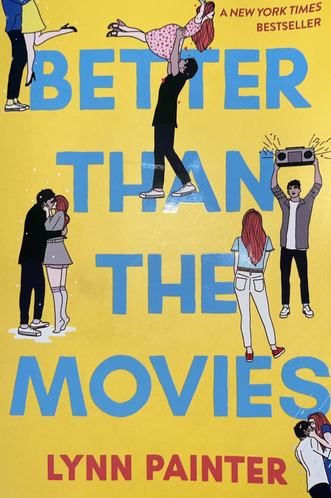
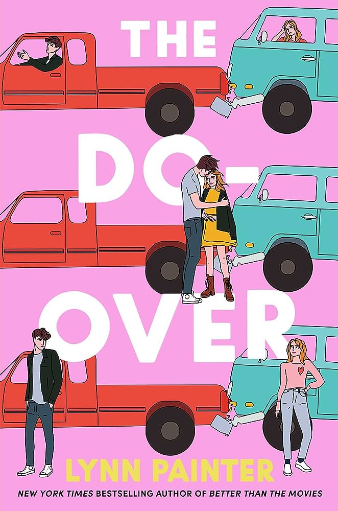

"She's pretty but her face doesn't transform into sunlight when she talks about music"
-Lynn Painter, Better Than The Movies

"I had a marvelous time ruining everything"
-Lynn Painter, The Do Over

"Maybe it's possible to have more than one home. Maybe it's possible to belong in a hundred different ways to a hundred different people and places"
-Emily Henry, Book Lovers

"My best friends taught me a new kind of quiet. The peaceful stillness of knowing one another so well, you don't need to fill the space.
And a new kind of loud: noise as a celebration, as the overflow of joy at being alive"
-Emily Henry, Happy Place